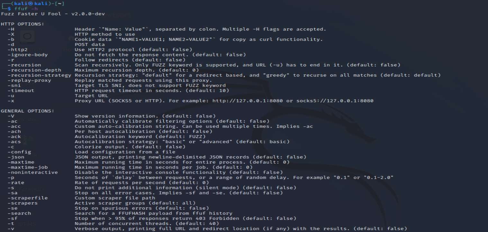

Fuzz Faster U Fools (FFUF) est un outil programmé sous GO. il sert pendant la phase d'exploitation du pentesting.
il est l'outils open-source du fuzzing le plus rapide.
Le fuzzing est une méthode qui permet d'envoyer des donnée arbitraire (malformé, anormal, corrompu, ...). à un système pour que ce système
fonctionne de la manière souhaitée mais différemment que la façon prévue. cela permet de découvrir de nouvelle vulnérabilité
le fuzzing regroupe toutes les activités permettant de trouver des fichiers cachés, envoyer des données aléatoires à un formulaire, tenté de se connecter à une application.
Le brut-force est une forme particulière de Fuzzing. le fuzzing sur un mot de passe peut aussi être de tenté de rentré tout type de donné pour casser le codage.
Télécharger le fichier docker-compose.yml
Il faut un site local pour faire les tests. de mon côté j'ai utilisé un site local
On lance la commande "ffuf -h" affiché les possibilités

les flags en 2 lettre -m* c'est pour "match", pour obtenir un élément particulier
Les flags en 2 lettres -f* c'est pour "filter", pour ne pas obtenir un élément particulier
On lance la commande "ffuf -w /usr/share/wordlists/rockyou.txt -u http://172.18.0.1/FUZZ" pour trouver les sous-onglets du site.
Le FUZZ final est important pour indiquer où le teste doit se faire.
Il est possible de brut force d'autre élément (POST, GET, PUT) selon les paramètre et l'emplacement du "FUZZ" dans l'url. pour obtenir le résultat souhaité, il faut utiliser des "filter" et des "match"